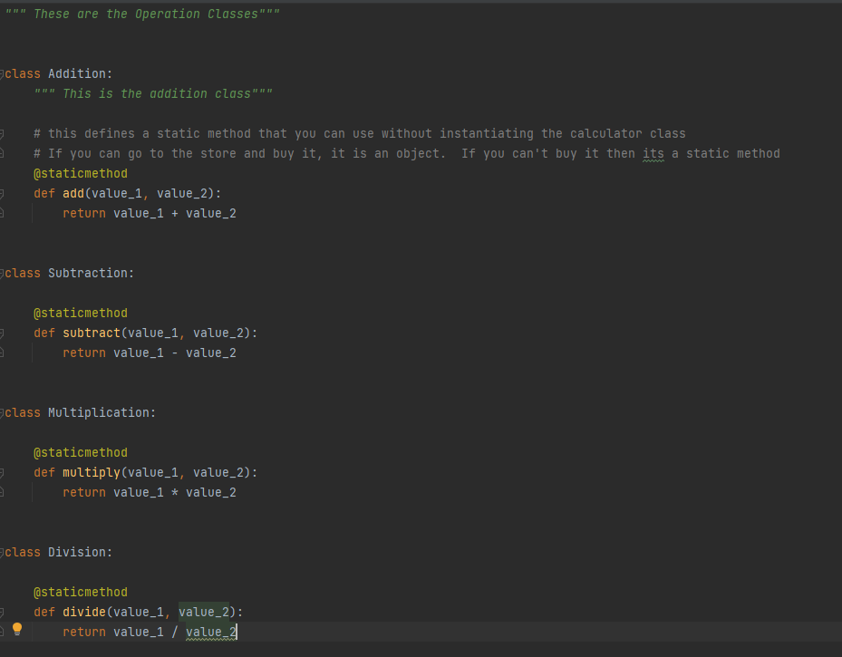
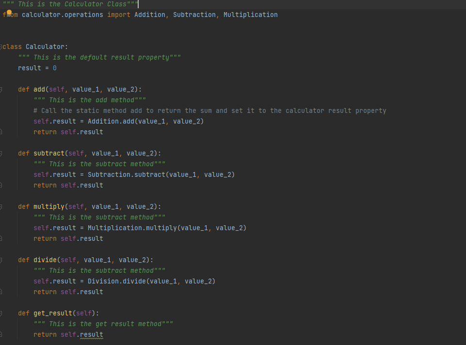
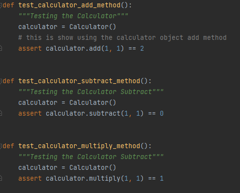
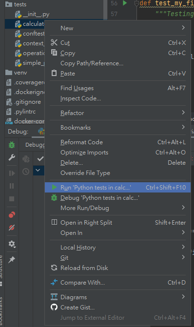
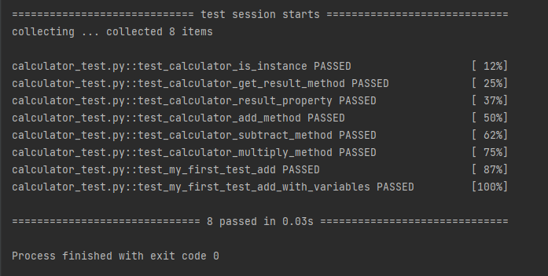

Step 1 :Create Calculator (Operation)


Step 2 :Create the testing based on the Calculator's function

Step 3 :Run the pytest

Step 4 :Check the result of pytest

Idea
The test program is written as a typical AAA pattern:
Arrange - Arrange test cases. Parameter initialization, input parameters, and expected results.
Act - Execute the test. Call the object under test and pass in the test case parameters.
Assert - Validate the result. Compare whether the execution result matches the expected result.
I first create the calculator as the main function, and check its functions including, add, subtract, multiply, and divide. Hence, I write the code for input values and see if the function would generate our expect output.
Then we could use the pytest to check if the output is correct by run the pytest or click the icon as image shows.
There are three main reason for why should we testing the code
Quick check
Imagine you modify the code in a huge, horrible legacy code base that sticks like hell. How confident can you be that you will not break other functions after the modification? My personal experience is, very low.
For example, I encountered a case before. A large part of the huge system was related to sending messages, but the previous developers were not modularized, the logic was scattered everywhere, and there were related api calls everywhere. In order to make the architecture move towards a clearer path, a colleague started to modify the underlying code related to the message. But he didn't complete all the calls written by others, which broke the functionality after going online. In addition, there is no document provided after the modification. Others have to go back and look at the part they have changed if they want to modify it.
Assuming that a system has written tests today, as long as you modify a small place, run the test immediately, and the computer can immediately diagnose whether the modification will destroy the existing functions, which greatly saves the subsequent debugging time!
You might say that if you want to write tests, it will increase the time of upfront development. That's right! This is inevitable, but I think it can be seen as a time investment, as well as the concept of buying insurance. Because in the follow-up development, testing can definitely help you save the time cost that exceeds the investment! While it's tedious to write, it's a responsible and safe development habit.
Looking back at the case mentioned at the beginning, you may ask, what should I do if the system is not tested now? In fact, this is another kind of knowledge, which will be discussed later. Here is a brief talk about the strategy, that is, there is no way, but to make changes gradually. And after each modification, be sure to supplement the test of the modified area, so that the code can become more and more healthy.
Architecture optimization
When designing a program, it must be unavoidable to call external apis, read and write db and other end-to-end operations. If we can't remove external dependencies during testing, it will cause big problems. The principle of the test is like a mathematical formula. We directly give four of the five inputs, and adjust the remaining one to see if the result meets the requirements. If the process needs to call the api to the outside, and the final test fails, is there a problem with the program we wrote, or is the problem with the external api? A lot of time will be wasted in the judgment, and the principle of our test will be lost.
If there is a good architectural plan during development, external api calls are packaged, individually modularized and loosely coupled, so that external api-related modules can be replaced with fake ones during testing, focusing on testing We write program logic, so that we can increase the efficiency of testing.
Since we have achieved loose coupling in order to make the program testable and modularized program blocks, if we want to modify the design in the future, we can enjoy the benefits of a highly flexible foundation, which indirectly affects our program structure and achieves the goal of optimization.
Test code is same as file
When testing, we will call the methods or functions we write in various ways, which is actually a calling paradigm, telling future developers how to use these methods, or how the methods will respond given what parameters are given. Sometimes it may not feel good to look at the api file. From the perspective of the test code, it is like an example, but it can quickly get started.